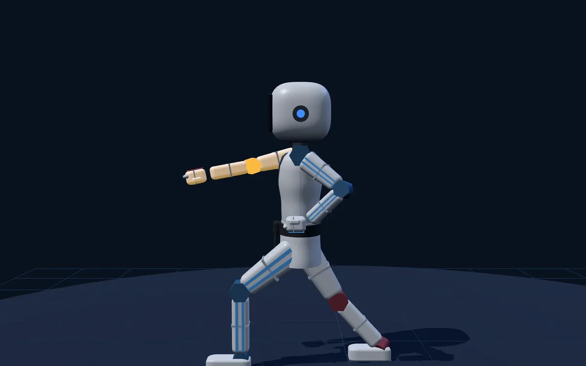
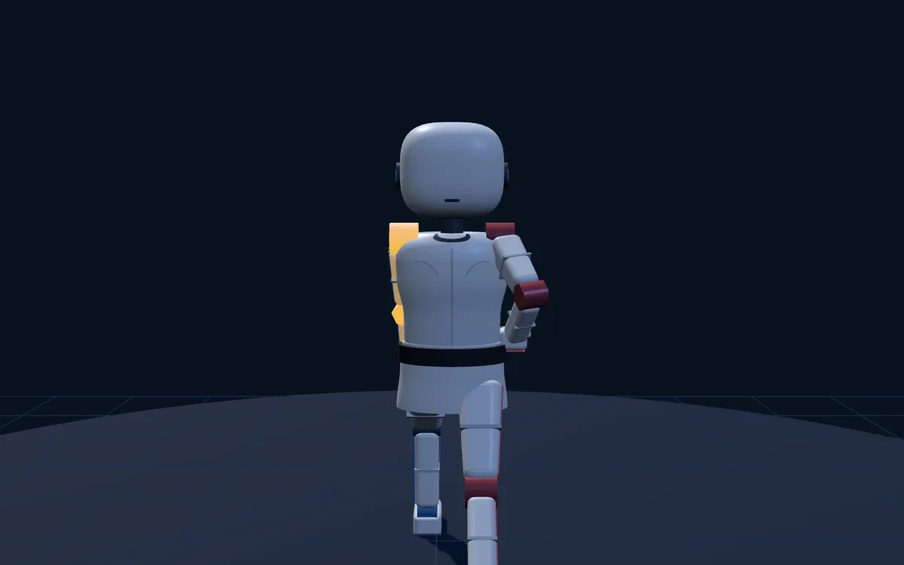
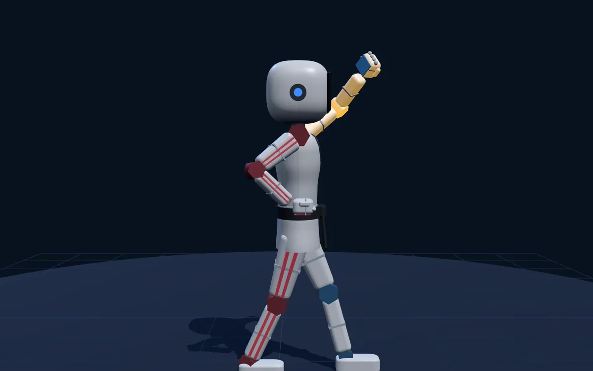
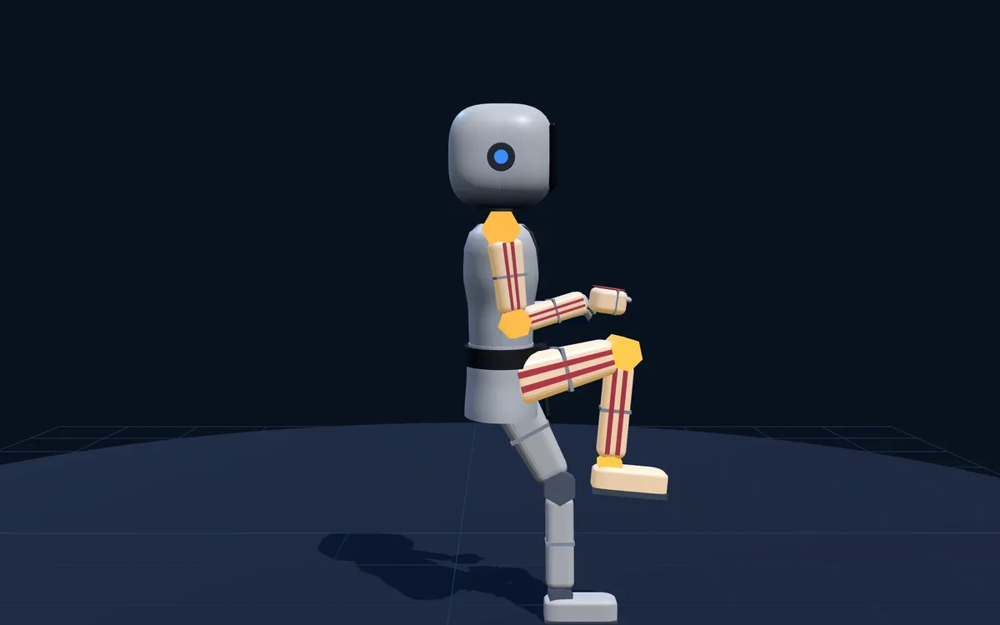

품새가
게임이 되는 순간.
카메라가 동작마다 몸 방향과 기술을 보고 정답 순서와 맞춰 봅니다. 단체 수업에서는 시범 로봇이 구령에 맞춰 반 전체 앞에서 품새를 보여 줍니다.
30초 동안 관절 인식과 손 들기 시작을 확인합니다. 현재 품새 프로그램은 마스터 시험 라이선스로만 실행할 수 있습니다.

로봇이 먼저,
반 전체가 따라.
관장님이 앞에서 매번 시범을 보이지 않아도 됩니다. 시범 로봇이 구령에 맞춰 한 동작씩 보여 주고, 아이들은 화면을 보며 그대로 따라 합니다.

단체 모드는 카메라 없이 화면과 구령에 맞춰 따라 하는 수업입니다. 학생 한 명 한 명의 동작은 판정하지 않습니다.
수업에서 이렇게 씁니다
순서 외우기부터 단체 따라하기까지. 동작마다 멈추는 순간을 AI 가 읽어 정답 순서와 맞춰 봅니다.
화면 예시 · 학생 시험 결과

시범 로봇 화면 · 왼앞서기 얼굴막기
화면 예시 · 2인 동시 비교

단체 모드 · 시범 로봇 앞차기
지금은 도장에서 시험 중입니다
시범 도장에서 아이들과 함께 판정 기준을 다듬고 있습니다. 출시 소식과 시험 참여는 상담으로 알려 드립니다.
가격과 라이선스 조건은 출시 때 안내합니다
- 학생 시험 · 관장 시범 · 2인 동시 · 단체 모드
- 태극 1·2장 시험 중 · 태극 3장 시범 검증 중
- 설치 없이 웹브라우저에서 실행
- 영상은 저장하지 않습니다
이렇게 판정합니다
- 준비 · 시작차렷으로 기다리다 "준비" 구령에 준비 자세를 하면, 전신이 보이는지 확인하고 "시작"을 안내합니다.
- 동작마다 멈춤한 동작을 끝내고 잠깐 멈추는 순간의 자세를 읽습니다.
- 방향 · 기술 비교몸이 어느 쪽을 보는지와 막기·지르기 종류를 정답 순서와 맞춰 봅니다. 서기는 참고로만 보여 줍니다.
- 바로 · 쉬어마지막 "바로"에서 준비 자세로 돌아오면 "쉬어"와 함께 결과를 보여 줍니다.
정면 카메라 한 대로 판정합니다 — 앞굽이 깊이처럼 카메라 쪽으로 늘어나는 동작은 정확히 재기 어려워 점수에 넣지 않습니다.
사용 환경 보기
별도 센서 없이 카메라가 있는 태블릿 또는 PC에서 사용할 수 있습니다. 학생 정면 4~5m, 허리 높이에 가로로 두고, 품새의 양옆과 앞쪽 끝까지 화면에 들어오도록 놓아 주세요. 단체 모드는 카메라를 쓰지 않으며 TV·프로젝터로 크게 띄워 쓰면 좋습니다.
AI POOMSAE MASTER 인식 안내
AI POOMSAE MASTER는 카메라 기반 AI 동작 인식을 활용하는 수업·훈련 보조 프로그램입니다. 카메라 위치와 각도, 조명, 촬영 거리, 신체 가림, 복장, 기기 성능에 따라 동작의 방향·기술 판정에 누락·오판정이 생길 수 있으며 100% 정확한 판정을 보장하지 않습니다. 특히 뒤로 돌아선 동작은 판정이 어려울 수 있습니다. 화면의 결과는 수업을 위한 참고 자료로 활용해 주세요.
자주 묻는 질문
궁금하신 내용을 정리했습니다.
언제 출시되나요? 가격은 얼마인가요?
지금은 시범 도장에서 시험하고 있습니다. 출시 일정과 가격은 정해지는 대로 안내드립니다. 상담으로 남겨 주시면 먼저 알려 드립니다.
어떤 품새를 지원하나요?
태극 1장과 태극 2장을 시험하고 있으며, 태극 3장 시범 로봇도 추가해 검증 중입니다. 3장 손날 기술의 세부 판정은 아직 검증 중이며, 지원 범위는 출시 때 안내합니다.
무엇을 판정하나요?
동작마다 몸이 어느 방향을 보는지와 기술 종류(아래막기·몸통지르기·몸통안막기·얼굴막기)를 정답 순서와 맞춰 봅니다. 서기(앞서기·앞굽이)는 정면 카메라로 깊이를 재기 어려워 참고로만 보여 줍니다.
단체 모드에도 카메라가 필요한가요?
아닙니다. 단체 모드는 카메라 없이 시범 로봇이 구령에 맞춰 품새를 보여 주고, 반 전체가 화면을 보며 따라 합니다. 학생 한 명 한 명의 동작은 판정하지 않습니다.
AI가 영상을 저장하나요?
아닙니다. 사진이나 영상은 저장되지 않습니다. 카메라는 실시간 동작 인식을 위해서만 사용됩니다.
AI KICK MASTER와 라이선스가 같은가요?
아닙니다. AI POOMSAE MASTER는 별도 제품이며 라이선스도 따로 발급됩니다.
TV나 프로젝터로 단체 수업을 할 수 있나요?
네. 프로그램을 실행한 PC나 태블릿을 TV·프로젝터에 연결해 큰 화면으로 수업할 수 있습니다.
AI POOMSAE MASTER
출시 소식을 먼저 받아 보세요
도장 수업 중에는 답변이 늦어질 수 있습니다. 확인하는 대로 순차적으로 답변드리겠습니다.
전화 문의 010-7657-3579